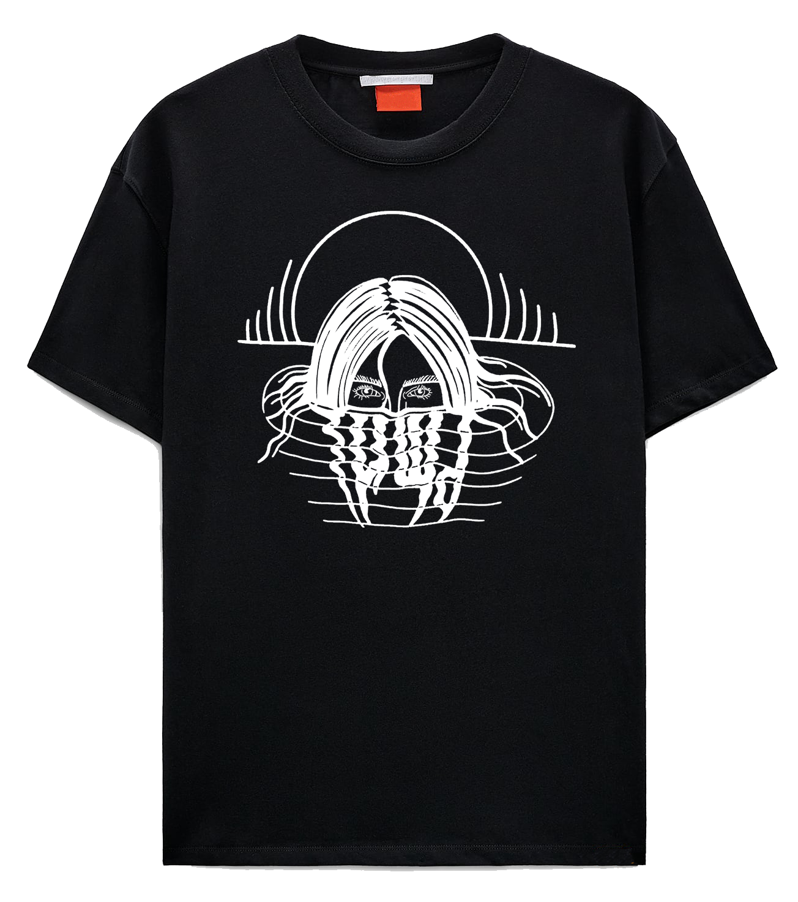

Футболка оверсайз ТИШЬ

Удобство и стиль - это про эту футболку
Мистика постоянно привлекала людей, поэтому мы и создали этот принт, нанесённый шелкографией
Одно из преимуществ данной футболки в том, что все бирки полупрозрачные
Состав:70% хлопок, 30% полиэстр